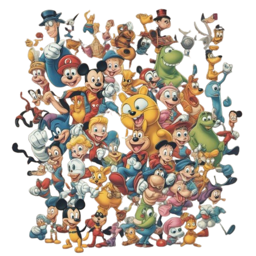

KD Cartoons
About Cartoons

A cartoon is a visual art form, typically hand-drawn or animated, presented in a non-realistic or semi-realistic style34. The modern interpretation of a cartoon includes a single image or a series of images meant to be satirical, humorous, or a caricature34. It can also refer to motion pictures that rely on a sequence of illustrations to create animation34. Creators of cartoons are known as cartoonists or animators3. Cartooning has roots in caricature, from the Italian word "caricare" which means to exaggerate or load1. Caricatures emphasize the subject’s most striking physical features for comic effect1. Cartoons often convey a message or highlight an irony, and their complexity varies based on the intended audience1. They represent aspects of life and can be humorous, serious, or even erotic2.
History of Cartoons
The history of cartoons stretches from early 17th-century caricatures to modern-day animated films and webcomics. Originating in Italy, caricature made its way to Britain, where publications like Punch popularized satirical drawings. The late 19th and early 20th centuries saw the birth of animation with pioneers like J. Stuart Blackton and Émile Cohl, leading to the groundbreaking sound cartoon Steamboat Willie in 1928. Disney's Snow White set the stage for feature-length animated films, while the rise of television brought iconic series like The Flintstones. The late 20th century introduced computer animation with Pixar's Toy Story, revolutionizing the industry. Today, cartoons encompass diverse styles and formats globally, reflecting ongoing cultural and technological evolution.
Click here